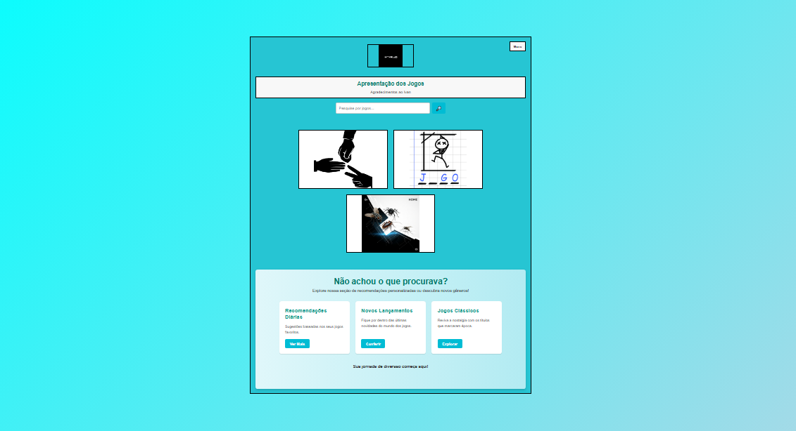

@aleciosousadecarvalho - Seletor de Cores
O projeto de um Trocador de Cores é a porta de entrada ideal para quem está começando a criar aplicações interativas com JavaScript! Este desafio não apenas combina a lógica de programação com a manipulação visual, mas também oferece uma oportunidade fantástica para consolidar os conceitos mais importantes do desenvolvimento web. Nesse projeto, você construirá uma ferramenta funcional onde o usuário pode, com um simples clique, mudar as cores de elementos da página aleatoriamente, vendo os resultados de forma instantânea. Ele serve como uma excelente prática para entender como o JavaScript pode manipular o DOM e criar uma experiência dinâmica, mostrando o poder da combinação de HTML, CSS e JavaScript na construção de interfaces de usuário responsivas e visualmente atraentes.
@arthurrodrigues1258 - Banco Vocação
O desenvolvimento de um projeto de conta de banco com foco mobile-first é um passo crucial para qualquer aspirante a desenvolvedor web, especialmente em um mundo onde a maioria dos acessos à internet acontece via smartphones. Este desafio vai muito além de criar uma interface bonita; ele ensina a pensar de forma responsiva desde o primeiro rascunho, garantindo que a aplicação seja não apenas funcional, mas também intuitiva e agradável em qualquer tamanho de tela. Ao construir uma aplicação mobile-first, você começa projetando e codificando para os dispositivos móveis, que possuem mais restrições de tela e recursos. Isso significa otimizar o layout, a tipografia e os elementos interativos para telas pequenas primeiro. Só depois de garantir uma experiência impecável no celular é que você expande e adapta o design para tablets e desktops. Essa abordagem força a priorizar o conteúdo e a funcionalidade mais importantes, resultando em uma experiência de usuário mais limpa e focada para todos. No contexto de uma conta de banco, isso implica em criar uma interface onde o usuário possa facilmente visualizar seu saldo, realizar transferências, ver extratos e gerenciar suas finanças de forma simples e direta, mesmo em uma tela de poucos centímetros. Você aprenderá a otimizar o uso do espaço, a criar botões de fácil toque e a garantir que todas as informações críticas estejam acessíveis sem a necessidade de rolagem excessiva.
@kurokawa_xf - JokeEmPôh
O clássico jogo de Pedra, Papel e Tesoura é muito mais que um passatempo divertido; ele se transforma em um projeto fundamental para quem está começando a mergulhar no mundo do desenvolvimento web. Ao criar sua própria versão desse jogo, você não apenas aplica conceitos básicos de HTML, CSS e JavaScript, mas também consolida a lógica por trás de aplicações interativas e responsivas. O projeto de Pedra, Papel e Tesoura é uma excelente maneira de construir uma aplicação completa, do início ao fim, aplicando desde a estrutura básica (HTML) e o visual (CSS) até a complexa lógica de jogo e a interatividade (JavaScript). É um trampolim perfeito para entender como criar experiências web engajadoras e funcionais.
@_eu_gabs18 - Hub de Jogos
Criar um Hub de Jogos é um projeto ambicioso e incrivelmente gratificante para desenvolvedores que buscam aprimorar suas habilidades em HTML, CSS e JavaScript. Mais do que apenas desenvolver um único jogo, este desafio propõe a construção de uma plataforma centralizada onde múltiplos jogos simples – como o clássico Pedra, Papel e Tesoura, um Trocador de Cores, ou até mesmo um Contador Básico – podem ser acessados e jogados em um só lugar. Desenvolver um Hub de Jogos é um projeto abrangente que simula a complexidade de aplicações maiores, enquanto permite que você trabalhe com a integração de componentes menores e funcionais. É uma excelente maneira de mostrar sua capacidade de planejar, estruturar e implementar uma aplicação web completa e interativa.
@kkauepjl - VocacaoFlix
Desenvolver a Vocação Flix é um projeto abrangente que demonstra a capacidade de planejar, estruturar e implementar uma aplicação web complexa, com foco em uma interface de usuário rica e uma experiência de navegação fluida. É um excelente portfólio para quem busca mostrar domínio sobre as tecnologias essenciais do desenvolvimento front-end. Desenvolver uma página como a Vocação Flix, inspirada na gigante do streaming, é um projeto ambicioso e extremamente valioso para qualquer desenvolvedor que busca aprofundar suas habilidades em HTML, CSS e JavaScript. Mais do que replicar um design, este desafio envolve a construção de uma interface de usuário complexa e dinâmica, que simula a experiência de navegar por um catálogo de filmes ou séries.
@nunes.zdx - Temporizador Simples
Criar um Contador Regressivo é um projeto clássico e extremamente prático para quem está aprendendo a manipular o tempo em aplicações web, usando principalmente o JavaScript. Este desafio não só ensina a lidar com datas e intervalos, mas também a atualizar a interface do usuário de forma dinâmica, em tempo real. Nesse projeto, você construirá uma ferramenta onde o usuário pode definir uma data e hora futuras, e a aplicação mostrará, de forma regressiva, quanto tempo resta para aquele momento – seja em dias, horas, minutos e segundos. É uma funcionalidade comum em lançamentos de produtos, eventos ou até mesmo para acompanhar prazos importantes.
@leolira13_ - Hangman Game
O clássico jogo da Forca ganha uma nova vida com esta versão interativa, desenvolvida inteiramente em JavaScript! Este projeto é uma excelente maneira de combinar a diversão de desvendar palavras com a prática de conceitos fundamentais da programação web. Nesta Forca Interativa, o objetivo do jogador é simples: adivinhar uma palavra secreta, letra por letra, antes que as chances se esgotem e a figura seja completada. Por trás da simplicidade do jogo, há uma lógica robusta em JavaScript que torna tudo possíve Este projeto da Forca é uma ótima oportunidade para solidificar seus conhecimentos em HTML (para a estrutura do jogo), CSS (para o visual e a figura da forca) e, principalmente, JavaScript (para toda a lógica e interatividade). Ele demonstra como essas tecnologias trabalham juntas para criar uma experiência de usuário envolvente e funcional.
@mdl_dh - Seletor de Cores
O projeto de um Trocador de Cores é a porta de entrada ideal para quem está começando a criar aplicações interativas com JavaScript! Este desafio não apenas combina a lógica de programação com a manipulação visual, mas também oferece uma oportunidade fantástica para consolidar os conceitos mais importantes do desenvolvimento web. Nesse projeto, você construirá uma ferramenta funcional onde o usuário pode, com um simples clique, mudar as cores de elementos da página aleatoriamente, vendo os resultados de forma instantânea. Ele serve como uma excelente prática para entender como o JavaScript pode manipular o DOM e criar uma experiência dinâmica, mostrando o poder da combinação de HTML, CSS e JavaScript na construção de interfaces de usuário responsivas e visualmente atraentes.
@matheus_andre_anjos - Inserct Attack
Desenvolver um portfólio impactante é crucial para destacar suas habilidades e projetos. Adotar o conceito de Mobile First é a melhor maneira de garantir que ele atenda às necessidades dos usuários modernos. A abordagem Mobile First prioriza o design e a funcionalidade para dispositivos móveis antes de expandir para telas maiores, resultando em uma experiência mais fluida e otimizada. Utilizando HTML, CSS e JavaScript, você pode criar um portfólio responsivo, com layout dinâmico e interações envolventes. Elementos como menus simplificados, imagens otimizadas e navegação intuitiva são fundamentais nessa estratégia, que coloca o usuário no centro da experiência. Um portfólio Mobile First não só melhora a usabilidade, mas também demonstra seu domínio das melhores práticas em design e desenvolvimento web.
@mah_tiago - VocacaoFlix
Em parceria com Kauê Torres, desenvolveu a Vocação Flix é um projeto abrangente que demonstra a capacidade de planejar, estruturar e implementar uma aplicação web complexa, com foco em uma interface de usuário rica e uma experiência de navegação fluida. É um excelente portfólio para quem busca mostrar domínio sobre as tecnologias essenciais do desenvolvimento front-end. Desenvolver uma página como a Vocação Flix, inspirada na gigante do streaming, é um projeto ambicioso e extremamente valioso para qualquer desenvolvedor que busca aprofundar suas habilidades em HTML, CSS e JavaScript. Mais do que replicar um design, este desafio envolve a construção de uma interface de usuário complexa e dinâmica, que simula a experiência de navegar por um catálogo de filmes ou séries.
@rapha_rocha786 - Dark Mode
Criar uma página de internet com funcionalidade de Modo Escuro (Dark Mode) é um projeto essencial no desenvolvimento web moderno. Mais do que uma simples preferência estética, o dark mode oferece benefícios significativos para a experiência do usuário, como a redução da fadiga ocular, especialmente em ambientes com pouca luz, e uma potencial economia de bateria em dispositivos com telas OLED/AMOLED. Este projeto é uma excelente oportunidade para aprofundar o uso de HTML, CSS e JavaScript na criação de interfaces dinâmicas e adaptáveis.
@eprudenciomacedo - Portifolio - biscoife
Desenvolver um portfólio impactante é crucial para destacar suas habilidades e projetos. Adotar o conceito de Mobile First é a melhor maneira de garantir que ele atenda às necessidades dos usuários modernos. A abordagem Mobile First prioriza o design e a funcionalidade para dispositivos móveis antes de expandir para telas maiores, resultando em uma experiência mais fluida e otimizada. Utilizando HTML, CSS e JavaScript, você pode criar um portfólio responsivo, com layout dinâmico e interações envolventes. Elementos como menus simplificados, imagens otimizadas e navegação intuitiva são fundamentais nessa estratégia, que coloca o usuário no centro da experiência. Um portfólio Mobile First não só melhora a usabilidade, mas também demonstra seu domínio das melhores práticas em design e desenvolvimento web.